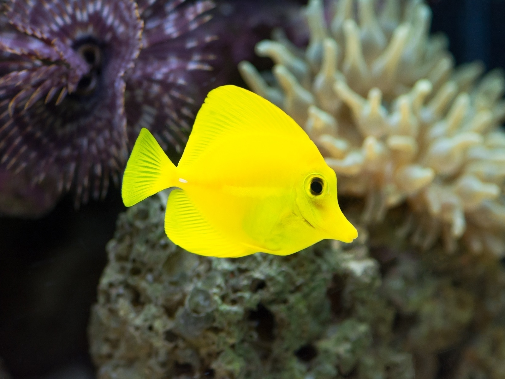
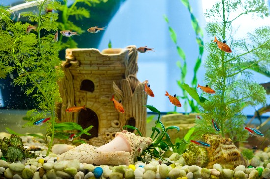
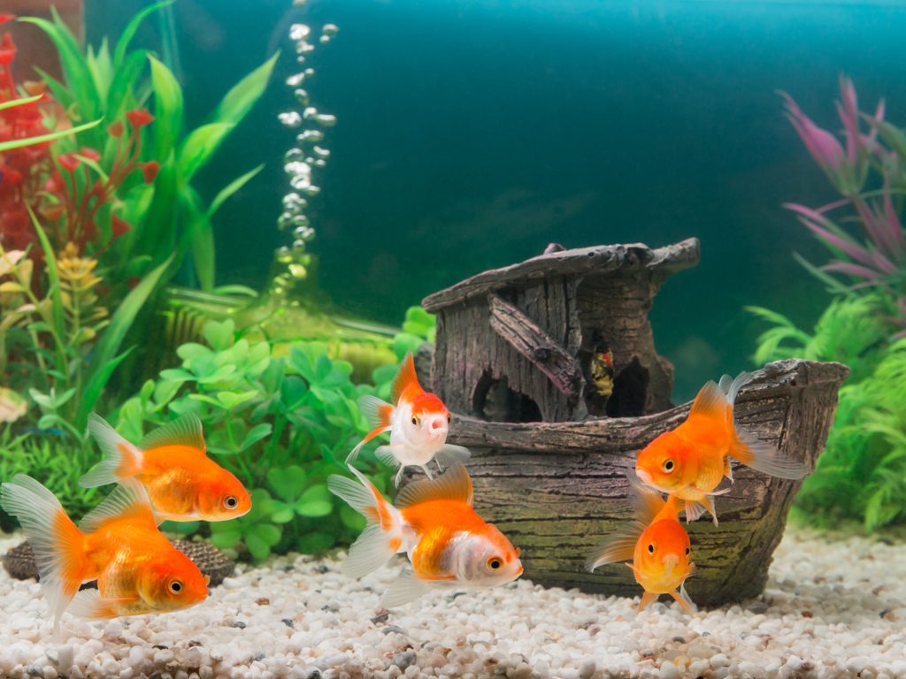
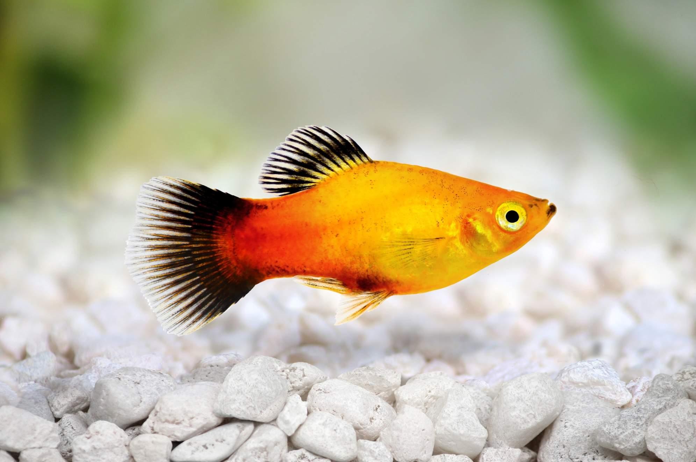
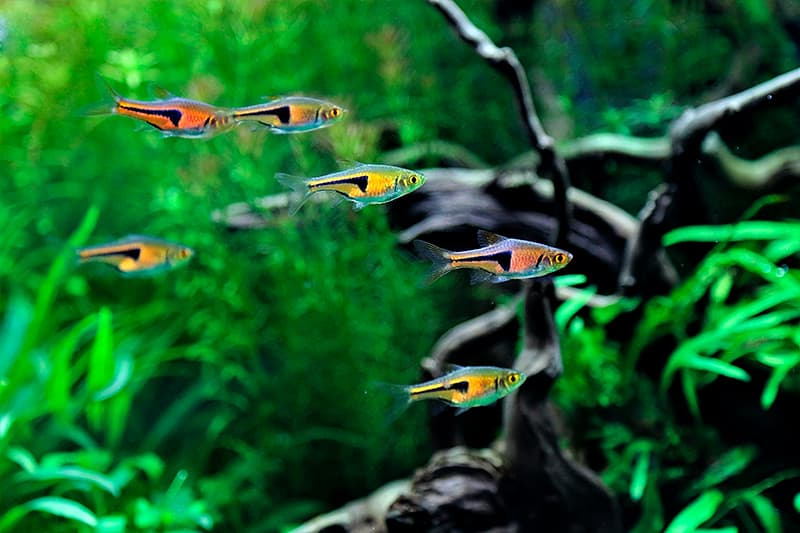
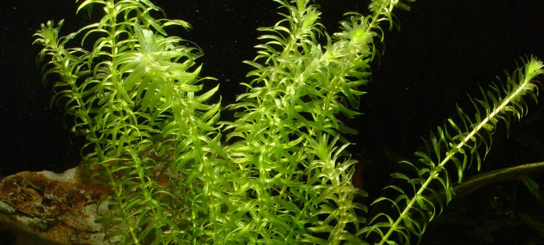
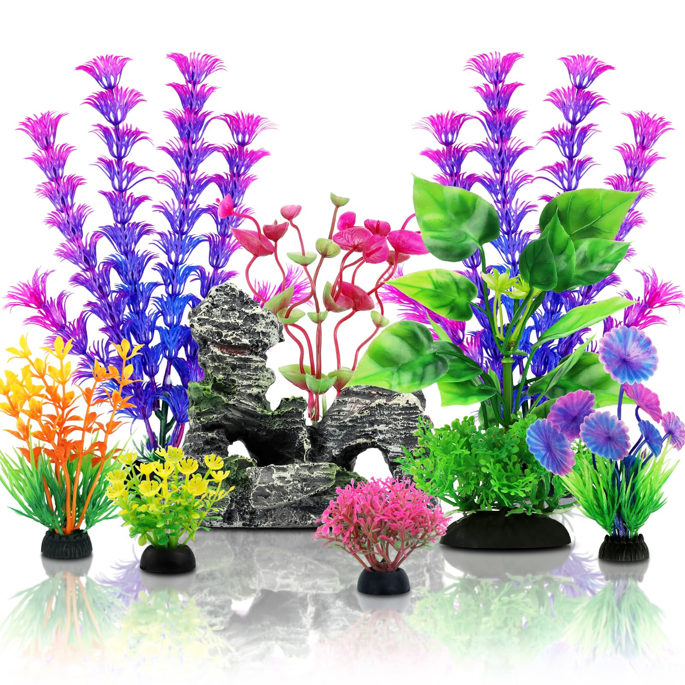

Sobre los peces que tenemos
En nuestra web encontrarás una amplia variedad de peces ideales para acuarios de agua dulce y salada. Contamos con especies populares como los guppys, betta, mollys y tetras, perfectos para principiantes. También ofrecemos peces ángel, discos y cíclidos africanos para aficionados más experimentados.

Mis Proyectos

Decoración

Peceras

Peces tropicales

Acuarios marinos

Plantas acuáticas

Accesorios
Experiencia
| Empresa | Puesto | Años |
|---|---|---|
| Ocean World | Biólogo Marino | 2035–2040 |
| AquaLife | Investigador Acuático | 2040–2045 |
| Blue Reef Center | Cuidador de Peces | 2045–2050 |